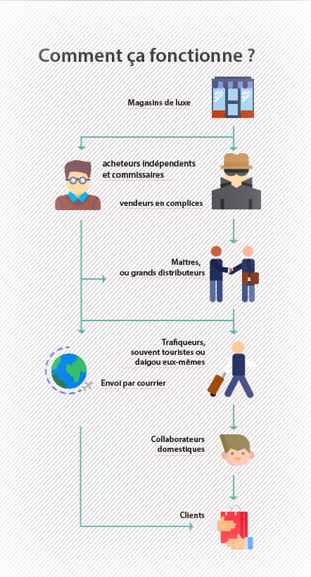

Le Trafic du luxe, un marché qui s’épanouit dans la clandestinité
Ils achètent en France puis revendent en Chine, profitant d'importants écarts de prix en les deux marchés. Or la belle époque pour les daigou serait bientôt derrière...


Les Chinois aiment le luxe. Dans le quartier parisien des grands magasins, quasiment tous les touristes asiatiques sont chargés de gros sacs de shopping. Dans la Galerie Lafayette, destination incontournable pour les touristes chinois qui visitent la capitale française, de nombreux d'entre eux font la queue devant des rayons pour « ramasser des choux », même si ce n’est pas des légumes mais des produits de luxes qu’ils collectionnent. Parmi ceux qui écument les magasins de luxe, un groupe d’acheteurs professionnels, appelé les daigou, se distingue des touristes, par leur pouvoir d’achat extraordinaire et leur fréquentation quasi-journalière à ces endroits de luxe.
En mandarin, le terme daigou désigne littéralement ceux qui « font du shopping à la place » de leurs familles, amis ou clients. Ce phénomène déjà connu chez les touristes japonais dans les années 1990, prend son essor chez les Chinois. Cette fois-ci, il est d’une ampleur bien plus importante. Né du boom économique et de l’émergence de l’E-commerce, le métier de daigou s’exerce principalement sur les réseaux sociaux, notamment WeChat, appli omnipotente qui domine en Chine. Les daigou, souvent des ressortissants mais parfois des voyageurs réguliers, achètent puis ramènent les marchandises vers la Chine pour les revendre.
Un métier très lucratif
En 2017, la Chine a enregistré un record de vente en ligne transfrontalière d’environ 10 milliards d’euros, soit une croissance de plus de 80% par rapport à l’an dernier, et ce excluant les commerces internationaux traditionnels. Le fort pouvoir d’achat des consommateurs chinois a donné naissance à des magnats de commerce numérique, notamment Alibaba, JD et NetEase. Trois géants qui ont créé leurs propres plateformes et permettent de faire du shopping à l’étranger depuis la Chine.
Les daigou, quant à eux, ont fondé un marché fantôme en parallèle aussi épanouissant qu’avantagieux. Le secret de leur réussite: les grands écarts de prix entre le marché chinois et ceux où les produits sont fabriqués. En effet, les consommateurs chinois doivent souvent payer 30% plus cher que leurs homologues européens pour les mêmes produits. Par ailleurs, les acheteurs à l’étranger, parfois déguisés en touristes, peuvent bénéficier de prix encore plus bas, grâce aux conditions de détaxe qu’ont fixées les douanes. En France, précisément, pour tout achat de plus de 175 euros vendu « au détail » et « à caractère touristique », les visiteurs non-UE peuvent, quand ils quittent le territoire français, demander un remboursement d’environ 12% du montant dépensé.
Perspective de la demande pour le luxe en Chine à l'horizon 2020
Cela donne une marge de rentabilité considérable pour les revendeurs, et Sophie en a profité dès sa première expérience en tant qu’acheteuse. « J’ai été très chanceuse », se souvient-elle, « mon patron m’a demandé de lui acheter un grand sac Birkin et grâce à cette seule commande j’ai gagné 400 euros, ce que j’aurais pu faire pendant tout le mois en prenant un boulet d’étudiant à côté. Le sac commandé a coûté environ 8000 euros, et j’ai touché une commission de 5%. » Il s’agit d’une ligne de produit très haut de gamme d’Hermès (même pour cette marque prodigieuse) dont le prix peut aller jusqu’à 300 000 dollars sur le marché international. En chine, en particulier, c’est encore plus exorbitant en raison des taux de taxe imposée sur les produits de luxe importés qui varient entre 30% et 60%. Sur le site Secoo.com, marchand chinois spécialisé en vente de luxe, il n’y a pas d’article Birkin à moins de 10 000 euros sauf quelques sacs d’occasions. « C’est surtout ça la marge de rentabilité pour les daigou », ajoute la jeune étudiante.
Écart de prix de luxe en 2017
Base 1 = France
Un prix plus abordable n’est pas le seul point fort pour les clients chinois, qui commencent à peine à se familiariser avec le milieu du luxe. « Jusqu’à l’époque récente, les consommateurs chinois manquaient de connaissance et de goût [pour le luxe]. Ils ne pouvaient décider quels produits acheter », élucide Denis Morisset, ancien directeur de luxe et enseignant de gestion des marques de luxe à l’ESSEC. De ce fait, les daigou sont souvent perçus comme des « connaisseurs » ou des « key opinion leaders [principaux leaders d'opinion en français] » qui ont développé une certaine influence chez les clients. « Sans oublier d’ailleurs que certains produits ne sont pas disponibles sur le marché chinois », ajoute le spécialiste.
Céline fait partie des influenceurs dont parle l’experte. Ne voulant pas gagner de l’argent de ses proches, la jeune fille a construit un réseau de followers autour d’elle à partir de zéro. Elle utilise WeChat mais aussi d’autres applis, comme Weibo (équivalent de Twitter) ou Little Red Book, plateforme style de vie permettant aux vlogueurs de tagger et promouvoir les produits qu’ils recommandent aux abonnés. « J’y partage mes expériences de shopping et les vêtements que je porte moi-même. Quand mes followers voient des choses qui leur plaisent, ils vont me contacter pour que je les achète pour eux », spécifie l’étudiante, ne cachant ses bons goûts pour le luxe et l’habillement.
Devenir daigou pourrait permettre aux jeunes ressortissants chinois en Europe d’avoir une vie financièrement indépendante voire bien opulente. En entreprenant ce métier, Céline parvient à satisfaire ses désirs pour le shopping et même à offre des produits de luxe à ses parents. Quand à Yifan, depuis son entrée dans le dans le domaine, il n’a plus demandé d’argent à ses parents. « Je ne fais pas mes comptes et ne sais pas combien je gagne exactement, mais je n’ai jamais de problème à joindre les deux bouts. » Ses frais d’études de 4000 euros par an mis à part, il se sort aisément de son loyer d’un grand appartement au centre de Milan qu’il co-loue avec deux autres étudiants chinois, eux aussi daigou à temps partiel. « Spendaccione » ou « gros prodigue » en italien, le jeune homme dépense chaque mois jusqu’à 5000 euros. « J’achète beaucoup de choses et j’aime voyager, voilà », rit-il, jetant un coup d’œil à son nouvel iPhone qui reçoit une série de messages WeChat. Dans sa salle de bain, plusieurs petits flacons s’éparpillent par terre. « Tom Ford » ou encore « Aesop », ces produits de beauté portent tous des noms prestigieux.
Entre blacklists et complicité
En avril dernier, des internautes chinois ont lancé une campagne de boycott contre le grand magasin Printemps-Haussmann de Paris et la marque Balenciaga car ceux-ci ont « discriminé » les clients chinois. La veille de l’incident, lorsqu’une dame chinoise faisait la queue devant le rayon de la marque de luxe à Printemps, d’autres clients français ont voulu la doubler dans la file. Son fils est venu à sa défense, mais, sans doute à cause de la barrière linguistique, le jeune homme s’est fait battre par terre. Le personnel de Balenciaga a décidé de ne plus servir les clients en arrière dans la queue, et a dit à la dame, ses paroles recueillies par d’autres visiteurs chinois sur place: « c’est à cause de vous [que] les autres ne peuvent non plus acheter. Si vous sortez ça sera bien. »
Pour les acheteurs, la discrimination contre les clients chinois est « un vrai phénomène », surtout quand ceux-ci achètent en très grande quantité jusqu’à épuiser le stockage des magasins. La jeune fille Céline est désormais « blacklistée » par Louis Vuitton à la suite de ses « achats abusés ». « Ils ont un système pour enregistrer l’identité de chaque client, explique-t-elle, et selon les politiques de vente chacun ne peut acheter que trois articles par ans. Je ne savais pas tout ça à l’époque. » Après avoir commandé pour ses clients trois petits sacs très populaires, Céline s’est fait bloquer. La marque est particulièrement vigilante aux achats répétitifs d’un seul produit identique, ceux qu’elle juge comme « commandes suspicieuses ». Par conséquent, l’étudiante ne peut plus du tout faire de shopping chez Louis Vuitton, même à titre personnel. Sa dernière expérience en magasin en fait preuve. « Tout se passait bien au début, et j’ai trouvé un sac à main qui me plaisait », elle continue de raconter, « mais tout a changé une fois le personnel a enregistré mon nom et a vu mon historique ». Résultat : elle s’est fait manifestement refuser. « Nous ne pouvons pas vous le vendre même si vous êtes riche, Madame. Nous devons réserver notre stockage à d’autres clients. Nous ne servons pas que les riches », cite Céline sa vendeuse.
L’identification de chaque client n’est pas uniquement une mesure contre-daigou, mais avant tout une étape fondamentale du « customer relationship management » [gestion des relations clients]. Selon Denis Morisset, l’émergence des acheteurs professionnels « remet en cause toute la stratégie du luxe, à commencer par la question d’image ». Plus important, le marché gris paralyse l’identification des « vrais clients » du luxe et, en conséquence, empêche les marques de personnaliser leur service et d’engager leurs consommateurs à des programmes de fidélité.
Mais toutes les marques ne sanctionnent pas les revendeurs, car ces derniers leur apportent une forte demande qui peut se traduire en profits financiers. Certains prennent même l’initiative de coopérer avec les trafiqueurs chinois.
Aux yeux de Mia*, ancienne professionnelle en vente à Milan, bien que les daigou soient « quand même facilement reconnaissables », ils font rarement l’objet de la discrimination ou de l’embargo, au moins c’est le cas pour les trois marques de luxe qu’elle a servies. « Ça dépend du vendeur et du stockage, oui, mais officiellement les marques ne distinguent pas les clients en fonction de leur nationalité. S’il y a des actions discriminatoires c’est à cause du vendeur lui-même, pas l’entreprise. »
Les daigou, quant à eux, ont souvent leurs propres vendeurs référents « infiltrés » dans des magasins afin de garantir un approvisionnement stable et durable. Le vaste réseau Wechat dont dispose Yifan en fait preuve. « Il y a aussi des groupes créés et gérés par les gens en magasin, chinois comme italiens », révèle le jeune homme, « nous avons un but commun, en tout cas, c’est de vendre plus ».
Cette collaboration tacite est aussi importante pour les daigou que pour les vendeurs en temps plein qui touchent un salaire flottant. « Notre revenu dépend largement des chiffres de ventes », décrypte Cécile*, « et l’objectif de vente nous oblige d’établir des liens avec des daigou ». Vendeuse expérimentée à la Galerie Lafayette à Paris, la Taïwanaise a commencé sa carrière en 2010 avec un poste en horlogerie-joaillerie. Puis, en 2014, recommandée par un chasseur de tête, elle a démissionné pour aller travailler chez une marque haut de gamme britannique où elle était payée en commission pour chaque vente effectuée, sans plafond. Grâce à ses compétences en mandarin et ses contacts avec les shoppeurs, Cécile est restée championne de vente de son magasin « quasiment tous les mois ».
La direction de luxe réagit aussi face à l’avantage financier représenté par l’afflux des Chinois, que ce soit des touristes ou des professionnels, et de plus en plus de boutiques à Paris ont recruté des vendeurs sinophones. Cécile reçoit souvent des messages de ses confrères français qui cherchent à étendre son équipe de vente, avec deux critères précis : « savoir parler mandarin et connaître des daigou ».
Ces derniers jouent un rôle encore plus important que de faire augmenter les chiffres de vente. Selon Denis Morisset, le luxe s’est transformé pendant les dernières décennies d’une tradition d’exclusivité et d’éternité en un « fashion market [marché de mode] », et propose de plus en plus de produits saisonniers et temporels, ce qui donne un « problème de stockage ». L’apparition des daigou répond opportunément au défi auquel les marques de luxe doivent faire face. « Il y a vingt ans il y avait très peu de magasins outlet ou de vente privée », illustre le professeur de commerce « … et les daigou font écouler le stockage et donnent des chiffres satisfaisants aux dirigeants. Le luxe n’en est pas le perdant ».
Malgré tout, la symbiose daigou-luxe n’est pas encore officiellement reconnue. « En tant que vendeurs, nous ne pouvons pas savoir si nos patrons en sont au courant », résume Cécile, « ce que je sais, c’est qu’à part quelques exceptions, la plupart des marques n’interdisent pas de leur en vendre. De temps en temps ils font exprès de punir un acheteur mineur mais les daigou maîtres ont leurs moyens. Bref, on tue un poulet pour faire peur aux singes », plaisante-t-elle, citant un fameux proverbe chinois.
« Zone grise » et « touche à la marge »
Le 29 septembre dernier, deux jours avant les vacances de la Fête nationale en Chine, une opération de fouilles inattendue s’est produite à l’aéroport de Shanghai. Les voyageurs sont demandés par la douane chinoise d’ouvrir leur valise et passer au contrôle les uns après les autres. « Massacre » ou encore « grande saignée » aux yeux des daigou, cette opération sans précédent vise bien ces commerçants discrets, qui ont dû s’acquitter des très importants droits de douane ou pénalités causées par leurs « comportements de contrebande ».
Tous les daigou interrogés par notre journaliste disent d’une même voix qu’«évidemment ce que l’on fait n’est pas tout à fait légal ». Leurs activités sont basées uniquement sur des applis de chat et des liens personnels, alors qu’aucun règlement commercial ne s’applique à cette zone grise. De ce fait, les daigou font souvent l’objet d’importantes évasions d’impôt. Selon la loi de douane chinoise, la déclaration est obligatoire pour tout individu entrant dans son territoire avec des objets personnels valant de plus de 5000 yuan, soit environ 640 euros. Les shoppeurs ainsi que leurs trafiqueurs, cependant, voyageant avec de très importantes marchandises, ne le font « quasiment jamais », d’où l’embuscade à l’aéroport de Shanghai. « On touche toujours à la marge », commente Yifan, faisant allusion à une loi du jeu de ping-pong, « et quand on marche tout le temps au bord des eaux, c’est difficile de ne pas mouiller les chaussures ».
En même temps, le marché daigou étant dans une zone grise non-réglementée, il reste très difficile pour les clients de vérifier l’authenticité de leurs achats. Ceux-ci exigent souvent des preuves comme le ticket de caisse ou l’emballage originel fourni par les magasins, tandis que cela pourrait être problématique pour les daigou. « Ce n’est pas parce que l’on vend des produits contrefaçons. Le ticket ça va, mais les boîtes et les sacs originels pèsent beaucoup et coûtent cher à expédier », explique le jeune Chinois à Milan. Paradoxalement, les justificatifs d’authenticité pourraient être au détriment des daigou car ils font également preuve du trafic. La logique est simple : « tu n’as pas besoin de garder les étiquettes pour ton sac à toi ! »
Grâce à la technologie de paiement mobile, d’ailleurs, le revendeur reçoit instantanément le paiement par smartphone effectué par son client, alors que ce dernier n’a aucune garantie en cas de non-livraison, endommagement ou remboursement. Les principaux leaders d'opinion comme Céline et Yifan cherchent à garder des liens étroits avec leur clientèle et à construire leur notoriété sur l’honorabilité. Les grands distributeurs peuvent être, cependant, « difficilement trouvables une fois la transaction effectuée ». C’est l’expérience lamentable de Ruiqi, qui a tenté d’acheter un sac à main au travers d’une shoppeuse qu’elle avait repérée par une recherche spontanée. Quelques mois à l’issu de sa commande, elle n’a reçu ni de réponse ni de produit. « Heureusement j’ai été remboursée après avoir menacé de recourir à la loi », déplore-t-elle.
Si jusqu’à maintenant les commerces transfrontaliers individuels sont soumis à la règle de la jungle, la Chine entend les mettre sous supervision dès le premier janvier prochain, jour où la « loi du commerce numérique » entrera en vigueur dans le pays. Selon le texte révélé par l’Assemblée nationale populaire de Chine, tout exploitant gérant un commerce en ligne dans le pays doit impérativement être enregistré, fourni d’un permis et payer les impôts. Si cela concerne des activités hors du territoire chinois, d’ailleurs, l’individu ou l’entreprise s’engage également de respecter les règlements du pays où il exerce ses affaires. L’infraction entraînera à des amendes pouvant aller jusqu’à environ 250 000 euros voire l’emprisonnement.
Alors que le gouvernement chinois vise avant tout à régulariser les plateformes d’E-commerce, les shoppeurs personnels à l’étrangers commencent à se lamenter du déclin imminent de leur métier, car les nouvelles règles semblent s’attaquer directement à eux. Beaucoup dévoilent sur les réseaux sociaux des histoires « des sangs et des larmes », pendant que d’autres jurent de « gagner les argents de trois ans en trois mois » avant la prise d’effet de la loi de l’E-commerce. Leur pessimisme est partagé par les expertes comme l’ex-manager de luxe Denis Morisset, qui constate que « les grandes années des daigou sont maintenant derrière ». Toutefois, Yifan y réagit d’une façon particulièrement tranquille : « comment vont-ils m’identifier ? Au pire des cas, mes trafiqueurs paient des taxes à la douane ».
La nouvelle ère ne deviendrait pas moins prometteuse pour les daigou, selon un éditorial de 36Kr, média chinois spécialisé en innovation et investissement de risque, qui prévoit une intégration des acheteurs professionnels, dans la « longue chaîne industrielle » de commerces transfrontalières. « Les daigou perdraient l’approvisionnement aux grandes plateformes et ainsi de la marge de rentabilité mais joueraient des rôles toujours importants dans l’industrie … grâce à la clientèle stable et fidèle qu’ils ont créée au fil des années ainsi que leurs relations avec celle-ci », anticipe l’article.
Aucun effet ne s’est encore produit avant que le papillon ne se batte les ailes, mais l’angoisse semble être déjà plus ou moins soulagée chez les daigou à Paris. La plupart des étudiants-acheteurs se disent dorénavant plus prudents ou plus réticents de faire du shopping pour leurs clients. Les daigou maîtres avec qui je me suis mis en contact sur WeChat, cependant, ne cessent d’ajouter des photos pour leurs marchandises en inventaire, submergeant les messages de solidarités qu’ils avaient prononcés envers les confrères et les consœurs victimes de l’embuscade à l’aéroport de Shanghai.
* Les prénoms ont été modifiés.